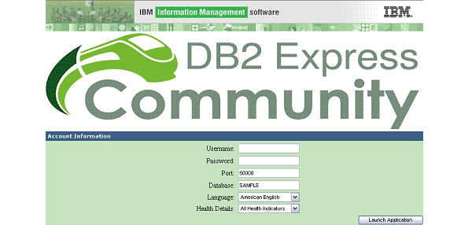
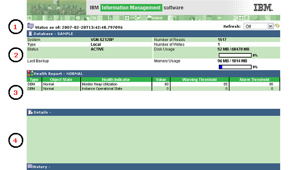
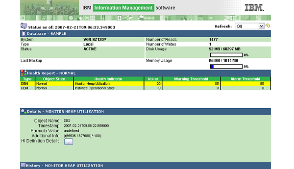
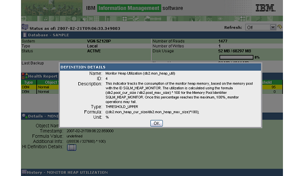
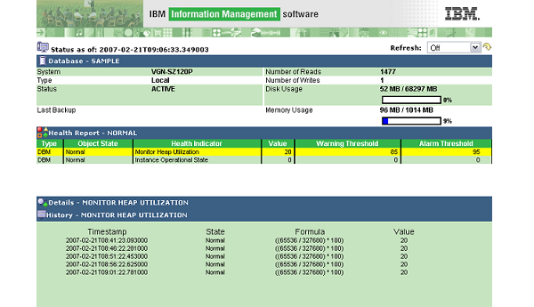

|

|
Using the DB2 Health Monitor Sample Application for PHP
|
The DB2 Health Monitor Sample Application for PHP demonstrates
the concept of DB2 health monitoring as a service.
An XML-based health report is produced by a Web service
and it is broken down into a meaningful format for the user by the
Web service consumer.
A walkthrough for using the DB2 Health Monitor Sample Application follows. |
Logging into the Sample Application
To gain access to health monitoring information, a valid username, password,
port number, language, and database name are required. The default port number,
and database name have been loaded into text fields on the login page (these are not
automatically detected).

The other important piece of information on the login page is the health detail
drop-down box. This allows the user to select the type of alerts that should
be displayed throughout the session. Possible types of alerts include:
- Database Manager Health Indicators
- Database Health Indicators
- Tablespace Container Health Indicators
- Tablespace Health Indicators
- All Health Indicators (all of the above)
Upon completing the login form, click the Launch Application button.
The Health Monitor Console
If the login is successful, a health monitoring console appears and after a few seconds,
information about the database (including health alerts of the specified
type) is displayed. The amount of time taken before the information is displayed can
vary depending on the deployment model chosen (some deployment models can
experience network latency) and the health report size.

The health monitoring console is divided into four main sections:
- Timestamp/Refresh Bar - Shows the time that the last health update was received and allows the user to set the refresh interval or manually refresh the list of alerts.
- Database Dashboard - Shows information about the sample database including the host on which it resides, the number of reads and writes executed against it, the amount of disk space it is currently capable of using, and the amount of memory that is available on the system on which it resides.
- Health Alerts Table - Shows a summary of health alerts that can be sorted.
- Health Details and History Accordion - Shows the details or history of the alert that is currently selected in the above table. Detail or history information can be toggled by clicking on their respective title bars.
Viewing Health Alert Details
If any alerts are listed in the Health Alerts Table, you can view more
detailed information about them by clicking on the row that represents the
alert in the Health Alerts Table.
A selected row is identified by its yellow background color.
To view the details click on the details
TitleBar
to toggle the details pane on the
Accordion.

Viewing Health Definition Details
If there is any uncertainty regarding the type of alert and what
it represents, it is possible to view the health alert definition details
by clicking on the button while
the details pane is visible.

A dialog window appears with the health alert defintion details.
Viewing Health Alert History
You can view health alert history in a similar way to health alert details.
You must highlight the health alert in the table before you can view additional
information. Instead of clicking on the details
TitleBar,
click on the history
TitleBar
to toggle history information.

Controlling Health Alert Updates
There are two methods to control the rate at which health report updates are requested and received from the Web Service Producer :
- Auto-update Drop-down - Allows the user to set a time interval at which updates will automatically be requested and received from the Web service.
- Manual Update Button - The refresh icon can be clicked in order to force an immediate update request to be sent to the Web service.
Logging out of the Sample Application
There are several ways to log out of the sample application: closing the browser window, visiting a different Web-page other than the health monitoring console page, or by using the browser refresh button (not the console update button). The rationale behind this is two-fold:
-
Because it is possible for the user to enter invalid login information
or encounter an error if part of the sample is not setup correctly,
it is important that the user be able to re-enter the information without
having to deal with browser caching issues.
A user often clicks the back button or refresh the page assuming
that the sample application will be reset. However, in some browsers,
the page has actually been cached or the cookie tied to the invalid
login information is still present or both.
Tying the logout mechanism to each of these scenarios ensures a friendlier end-user experience. - Secondly, tying the logout mechanism to the browser refresh button helps to illustrate the AJAX experience. That is, although the information on the Web-page is being updated, it is the individual components on the page (widgets) that are being updated, not the entire page itself.
© Copyright IBM Corp. 2007. All rights reserved.
IBM®, the IBM logo, DB2®, AIX®, and pureXML™ are
registered trademarks of International Business Machines Corporation in the
United States, other countries, or both.
Zend and Zend Core are registered trademarks of Zend Technologies Limited,
in the United States, other countries, or both.
Mozilla® and Firefox® are registered trademarks of the Mozilla Foundation in the
United States and other countries.
Microsoft, Windows, Windows NT, Internet Explorer®, and the Windows logo are
trademarks of Microsoft Corporation in the United States, other countries, or
both.
Linux is a registered trademark of Linus Torvalds in the United
States, other countries, or both.
Other company, product, or service names
may be trademarks or service marks of others.